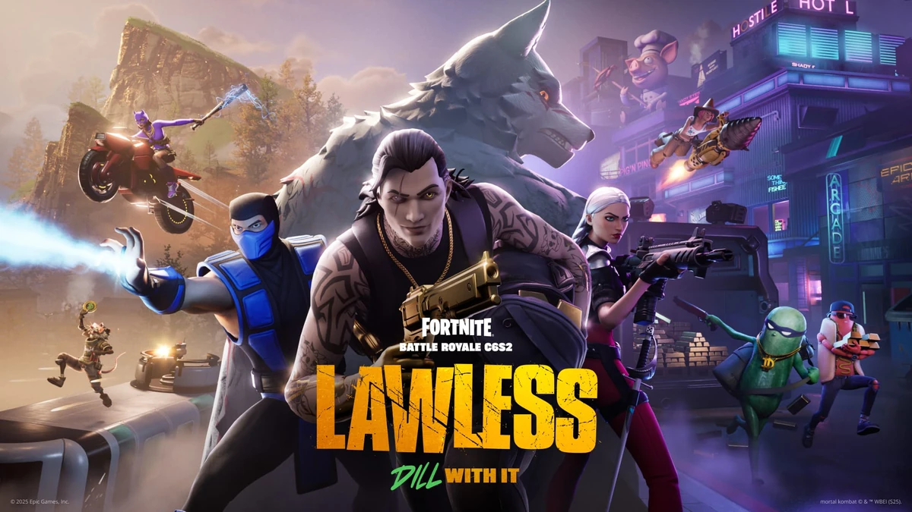

Role: Gameplay Programmer Intern
- Time: January 2025 - May 2025

Previous Role
I served as a Gameplay Programmer Intern on Fortnite Creative, working alongside the Fortnite Ecosystem team on projects related to Unreal Editor for Fortnite.
- Prototyping gameplay mechanics within UEFN and Verse
- Collaborated with 3D environmental artists, game designers, and programmers on internal projects.
Unreal Editor for Fortnite
Unreal Editor for Fortnite (UEFN) is a PC application on the Epic Launcher that allows developers to publish custom experiences and games into Fortnite. Fortnite and UEFN work together to enable developers to integrate new features directly into the live game. UEFN and the Verse language allow creators to make experiences across PC and consoles.
Fortnite Creative
Fortnite Creative allows users to design games on custom islands. Creators can build experiences across PC, console, and mobile using private maps where progress is saved. Players can build and share their own experiences in Fortnite in new ways with friends.